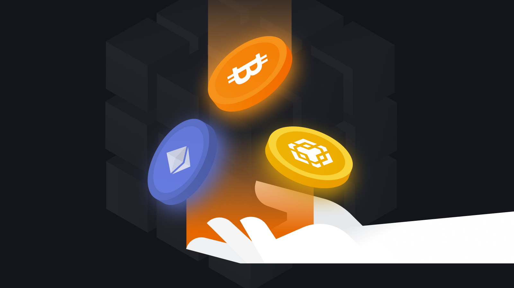

Introduction to Cryptocurrency
Cryptocurrency is a form of digital money that operates on blockchain technology. Unlike traditional currencies like euros or dollars, cryptocurrency has no physical form and is not controlled by banks or governments.
- Decentralization: No central authority manages the currency
- Security: Cryptographic techniques make transactions secure
- Transparency: All transactions are recorded in a public blockchain network
- Convenience: Transactions can be fast and borderless
How Cryptocurrency Works
Cryptocurrency is based on blockchain technology — a distributed database that stores information about all transactions. The main feature of blockchain is its decentralization: data is not stored on a single server but is distributed across thousands of computers (nodes) worldwide.
Key elements of cryptocurrency operation:
-
Blocks and chains:
Each block contains data about several transactions, a unique code (hash), and a reference to the previous block. This creates a chain that cannot be altered without consensus from the entire network.
-
Consensus mechanisms:
These are essential for verifying the authenticity of transactions:
- Proof of Work: Used in Bitcoin, this mechanism requires computers to solve complex problems to confirm transactions.
- Proof of Stake: Used in Ethereum 2.0, it allows participants to validate transactions based on the number of coins they hold in the network.
-
Cryptographic protection:
Each transaction is secured by advanced mathematical algorithms, making it nearly impossible to forge or alter data.
These elements ensure cryptocurrency's security, transparency, and reliability, even without a central governing body.
Examples of Popular Cryptocurrencies
There are many cryptocurrencies, each with unique features and goals. Here are some of the most popular:
-
Bitcoin (BTC):
Bitcoin is the first cryptocurrency, created in 2009 by an anonymous developer or group known as Satoshi Nakamoto. Its goal is to become a decentralized alternative to traditional money. Bitcoin is often referred to as "digital gold" due to its limited supply.
-
Ethereum (ETH):
Ethereum, launched in 2015, differs from Bitcoin by offering additional functionality. It is not only a cryptocurrency but also a platform for creating decentralized applications and smart contracts.
-
Ripple (XRP):
Ripple focuses on the banking sector, helping to speed up and reduce the cost of international payments. Many major banks already use Ripple in their systems.
-
Stablecoins:
Cryptocurrencies like USDT and USDC maintain price stability by being pegged to real assets, such as the US dollar. They are popular among users seeking to avoid volatility.
Why Cryptocurrency is Important
Decentralization and independence
Traditional financial systems rely on central banks and intermediaries. Cryptocurrency eliminates the need for intermediaries, enabling users to manage their finances independently.
Financial accessibility
In countries with unstable economies, cryptocurrency provides access to global financial systems, especially in regions where traditional banks are inaccessible.
Transparency and trust
Blockchain makes all transactions transparent. This helps combat corruption and increases trust among system participants.
Protection against inflation
Cryptocurrencies like Bitcoin have a limited supply, making them resistant to inflation and attractive as a store of value.
Innovations and new technologies
Cryptocurrencies drive the development of blockchain platforms, decentralized finance (DeFi), and Web3, creating new business models and technologies.
How to Start Using Cryptocurrency
Getting started with cryptocurrency is easier than it seems. Here’s a step-by-step guide:

-
Choose a crypto wallet:
To store cryptocurrency, you’ll need a wallet. There are two main types:
- Hot wallets: Apps or online services like MetaMask or Trust Wallet. They’re convenient but require constant internet access.
- Cold wallets: Hardware devices or offline solutions that offer maximum security.
-
Register on a cryptocurrency exchange:
Platforms like Binance, Coinbase, or Kraken allow you to buy and sell cryptocurrency. Registration usually takes just a few minutes.
-
Buy cryptocurrency:
Fund your account on the exchange and choose the cryptocurrency you’re interested in. Start with a small amount to understand how it works.
-
Secure your assets:
Never share your private keys with third parties. Use strong passwords and enable two-factor authentication.
The Illegality of Cryptocurrency
Cryptocurrency is an innovative technology, but its legal status varies significantly across countries. In some regions, cryptocurrencies are banned or heavily regulated due to their decentralized nature and potential risks.
Why is cryptocurrency considered illegal?
-
Anonymity and criminal activity:
Cryptocurrencies like Bitcoin provide a high level of privacy, making them attractive for illegal operations such as trading banned goods, tax evasion, or money laundering.
-
Lack of control:
Unlike fiat currencies, cryptocurrencies are not regulated by central banks, raising concerns about destabilizing traditional financial systems.
-
Threat to national currencies:
Some countries see cryptocurrencies as a threat to their economic stability, as they could replace national currencies or bypass state financial systems.
-
Technological complexity:
Blockchain technology can be challenging to understand and regulate, making it difficult for governments to control cryptocurrency usage.
Examples of countries with restrictions or bans
- China: Completely banned cryptocurrency operations, including mining, citing threats to financial stability.
- Algeria and Morocco: Any use or exchange of cryptocurrencies is strictly prohibited.
- India (previously): Cryptocurrencies were partially banned in 2020 but later restrictions were eased.
How do governments combat illegality?
-
Regulation and taxation:
Some countries impose strict rules and taxes on cryptocurrency users to prevent illegal use.
-
Creating digital currencies (CBDC):
Governments are developing their own digital currencies to offer alternatives to cryptocurrencies.
The Future of Cryptocurrency
Cryptocurrency is becoming an integral part of the global economy, and its potential is only beginning to unfold
-
Expansion of use cases:
More companies are accepting cryptocurrency as a payment method. For example, Tesla, Microsoft, and Starbucks already work with cryptocurrencies.
-
Decentralized finance (DeFi):
New financial platforms allow users to lend, invest, and trade without banks.
-
Central Bank Digital Currencies (CBDCs):
Many countries are developing their own digital currencies to compete with private cryptocurrencies.
-
Web3 and decentralization:
The future of the internet is being built on decentralized platforms, where users control their data and interactions.
-
Resilience to challenges:
Despite regulations and volatility, cryptocurrency continues to evolve, finding new applications.